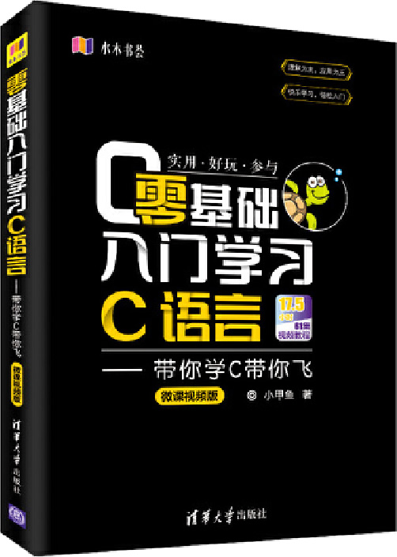

首页 > 书籍下载
《零基础入门学习C语言(带你学C带你飞)》微课视频版PDF下载（高清完整版）
|  | 作者：小甲鱼 |
| 出版时间：2019年05月01日 | |
| 出版社：清华大学出版社 | |
| 书号ISBN：9787302505945 | |
| 总页数：364 | |
| 总字数：53.5W |
这是一本专为初学者打造的 C语言入门书籍，配套 61 集免费视频教程，致力于帮助想学编程的初学者轻松、快速入门 C语言。
这里提供的是《数据结构(C语言版)》的高清 PDF 下载，内容完整，附带目录标签。
这本书提倡“理解为主，应用为王”，书中列举了大量有趣的例子，以实例引导的方式讲述 C 语言的各个知识点，让读者在大量的实践中快速掌握 C 语言。
自出版之日起，这本书赢得了众多读者的好评，比如一位读者这样评价：
书中讲解通俗易懂，看的过程中一定得勤加练习，坚持看完的话，入门没有问题！
书籍目录
- 第1章 初窥门径 1
- 1.1 C语言被淘汰了吗 1
- 1.2 莫尔斯密码 2
- 1.3 机器语言 2
- 1.4 汇编语言 3
- 1.5 C语言 4
- 1.6 C语言的优势 5
- 1.7 个程序 6
- 1.8 打印 7
- 1.9 变量 11
- 1.10 常量 14
- 1.11 数据类型 16
- 1.12 sizeof运算符 17
- 1.13 signed和unsigned 19
- 1.14 取值范围 20
- 1.15 字符 25
- 1.16 字符串 28
- 1.17 运算符 30
- 第2章 了不起的分支和循环 37
- 2.1 分支结构 37
- 2.2 循环结构 54
- 2.3 拾遗 69
- 第3章 数组 76
- 3.1 一维数组 77
- 3.2 字符串处理函数 81
- 3.3 二维数组 86
- 第4章 指针 90
- 4.1 指针和指针变量 91
- 4.2 指针和数组 94
- 4.3 void指针 109
- 4.4 NULL指针 112
- 4.5 指向指针的指针 113
- 4.6 指针数组和指向指针的指针 114
- 4.7 再讲数组指针和二维数组 116
- 4.8 常量和指针 118
- 4.9 指向常量的指针 119
- 4.10 常量指针 120
- 第5章 函数 124
- 5.1 函数的定义和声明 125
- 5.2 函数的参数和返回值 128
- 5.3 指针函数和函数指针 135
- 5.4 局部变量和全局变量 140
- 5.5 作用域和链接属性 146
- 5.6 生存期和存储类型 151
- 5.7 递归 156
- 5.8 动态内存管理 168
- 5.9 C语言的内存布局 177
- 5.10 高级宏定义 184
- 5.11 内联函数 188
- 5.12 一些鲜为人知的技巧 190
- 第6章 结构体 193
- 6.1 结构体的声明和定义 193
- 6.2 结构体嵌套 199
- 6.3 结构体数组 200
- 6.4 结构体指针 201
- 6.5 传递结构体信息 203
- 6.6 动态申请结构体 207
- 6.7 单链表 212
- 6.8 内存池 225
- 6.9 typedef 239
- 6.10 共用体 249
- 6.11 枚举 253
- 6.12 位域 256
- 第7章 位操作 260
- 7.1 逻辑位运算符 261
- 7.2 移位运算符 264
- 7.3 应用 267
- 第8章 文件操作 270
- 8.1 文件是什么 270
- 8.2 打开和关闭文件 271
- 8.3 顺序读写文件 273
- 8.4 随机读写文件 281
- 8.5 标准流 285
- 8.6 I/O缓冲区 291
- 附录
- 附录A 环境搭建教程 294
- 附录B VIM快速入门 334
书籍下载
一键登录，免费下载完整版 PDF，文件名称：《零基础入门学习C语言(带你学C带你飞)》微课视频版.pdf